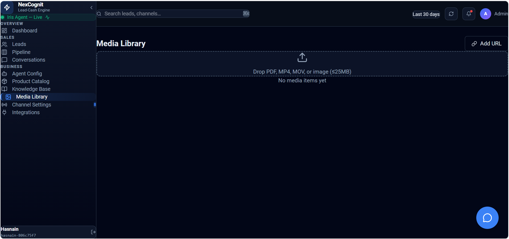

Media Library
The Media Library is where users can manage media assets used inside NexCognit. It gives your team a central place to keep and organize files or other media resources that support customer communication and business content.
Media Library overview
The Media Library helps keep uploaded media organized inside the workspace. Depending on your setup, it may contain images or other files used to support business content and communication across the platform.

What the Media Library is used for
The Media Library is used to store and manage media assets that may be needed inside NexCognit. This can include files that support customer-facing communication, internal business content, or workspace organization.
How uploaded media can support business content and communication
Uploaded media can help teams present information more clearly and make customer communication more engaging. By keeping media assets available in one place, the content is easier to find and reuse when needed.
Why organizing media inside the platform can be useful
Organizing media inside the platform helps keep assets easy to find and consistent across work. A well-managed library reduces confusion and helps teams work with the files they need in a more efficient way.
How Media Library fits into the broader NexCognit workspace
The Media Library fits into the broader NexCognit workspace as a place for supporting content alongside other business tools. It helps keep media resources connected to the work being done in the platform without needing to manage everything outside the workspace.
Things to know
- The exact media types and usage may vary depending on your setup.
- Keeping media organized makes it easier to reuse and manage over time.
- Use the Media Library as a practical support area for content and communication needs.